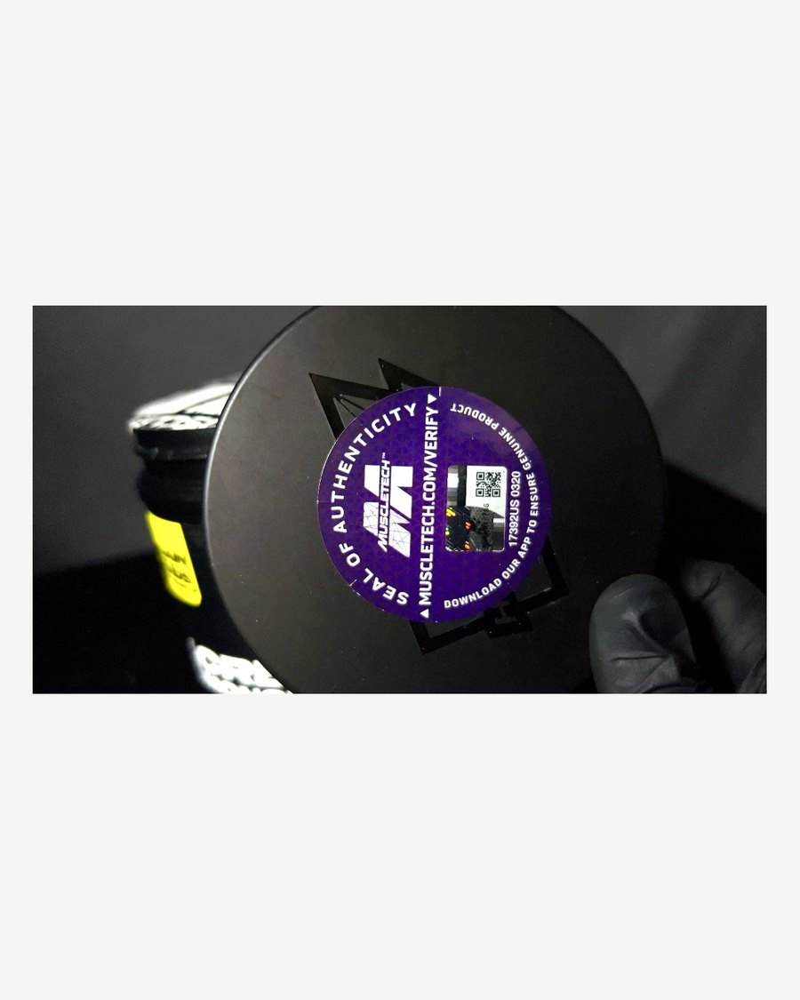

Guía Originalidad
¿Cómo saber si tu creatina es original?
7 señales con fotos reales · Actualizado agosto 2026 · Por el equipo REVTILE
En Colombia circulan suplementos falsificados: tarros rellenados con harinas, maltodextrina o mezclas sin creatina real, vendidos en empaques casi idénticos a los originales. Se ven iguales por fuera — pero no funcionan, y en el peor caso pueden hacerte daño. La buena noticia: una creatina original se puede verificar. Estas son las 7 señales, con fotos y videos de tarros reales.
1. La banda de seguridad externa está intacta
Todo tarro original llega con un plástico termosellado alrededor de la tapa, uniforme y bien adherido. Si la banda está floja, arrugada, recortada a mano o simplemente no está, desconfía: el tarro pudo ser abierto y rellenado.
2. El sello interno de fábrica está sin romper
Debajo de la tapa hay un sello de aluminio o membrana pegada al borde del tarro, con el logo del fabricante en muchas referencias. Debe estar completamente adherido y sin marcas de haber sido despegado y vuelto a pegar. Un sello levantado en los bordes, con pegamento irregular o genérico (sin marca) es la señal de alarma número uno.
3. Lote y fecha de vencimiento impresos (no en sticker)

El fabricante imprime el número de lote y la fecha de vencimiento con tinta, directamente sobre el envase (normalmente en la base o el hombro del tarro). Si vienen en una etiqueta adhesiva, borrosos, o simplemente no están, es falsificada. Además, el lote es verificable: puedes contactar al fabricante con ese número y confirmar que existe.
4. El código QR de autenticidad (MuscleTech)

Algunas marcas incluyen verificación digital. MuscleTech trae un sello holográfico con código QR que puedes escanear: te lleva a su verificador oficial (muscletech.com/verify) y confirma que ese tarro específico es genuino. Es la prueba más contundente que existe — si un vendedor no te deja escanearlo, huye.
5. El polvo: fino, blanco y prácticamente sin sabor

La creatina monohidratada micronizada original es un polvo blanco brillante, muy fino, sin olor y casi sin sabor (apenas un toque amargo). Señales de falsificación: color amarillento o grisáceo, grumos duros, olor dulce o a harina, sabor dulce (¡la creatina no es dulce — si sabe dulce, es otra cosa!).
6. La disolución en agua
La creatina micronizada no se disuelve al 100% (eso es normal), pero se comporta de forma característica: el agua queda levemente turbia con partículas muy finas que se asientan despacio. Si se disuelve completamente al instante y el agua queda transparente y dulce, probablemente es maltodextrina o azúcar. Si hace espuma o flota en grumos, tampoco es creatina.
7. El precio y el vendedor
La creatina original tiene un costo de importación real. Si un tarro de 300 g de una marca reconocida te lo ofrecen a mitad del precio de mercado, la matemática no da — nadie vende perdiendo. Y la señal definitiva del vendedor confiable: te muestra la evidencia antes de que pagues — fotos del sello, del lote y del tarro específico que vas a recibir, no fotos genéricas de catálogo.
Checklist rápida antes de comprar
- ✅ Banda de seguridad externa intacta y uniforme
- ✅ Sello interno de fábrica sin marcas de manipulación
- ✅ Lote y vencimiento impresos con tinta en el envase
- ✅ QR de autenticidad escaneado y verificado (si la marca lo trae)
- ✅ Polvo fino, blanco, sin olor ni sabor dulce
- ✅ Precio coherente con el mercado
- ✅ El vendedor muestra fotos del tarro específico antes del pago
¿Y si ya compraste una sospechosa?
No la consumas. Verifica el lote con el fabricante (todas las marcas tienen formulario de contacto), escanea el QR si lo trae, y reclama al vendedor con las evidencias. Si la compraste por una plataforma (Mercado Libre, Marketplace), abre disputa — las plataformas suelen devolver el dinero ante falsificaciones comprobadas.
Así lo hacemos en REVTILE 🦎
Todo lo que leíste arriba es exactamente nuestro proceso: cada tarro que vendemos va con fotos del sello y del lote de TU tarro específico antes del despacho, verificación QR en MuscleTech, y garantía de devolución del 100% si un producto no fuera original tras verificarlo con el fabricante. Por eso podemos escribir esta guía con fotos propias.
Sigue aprendiendo: Guía de creatina para principiantes · ON vs MuscleTech: ¿cuál elegir?